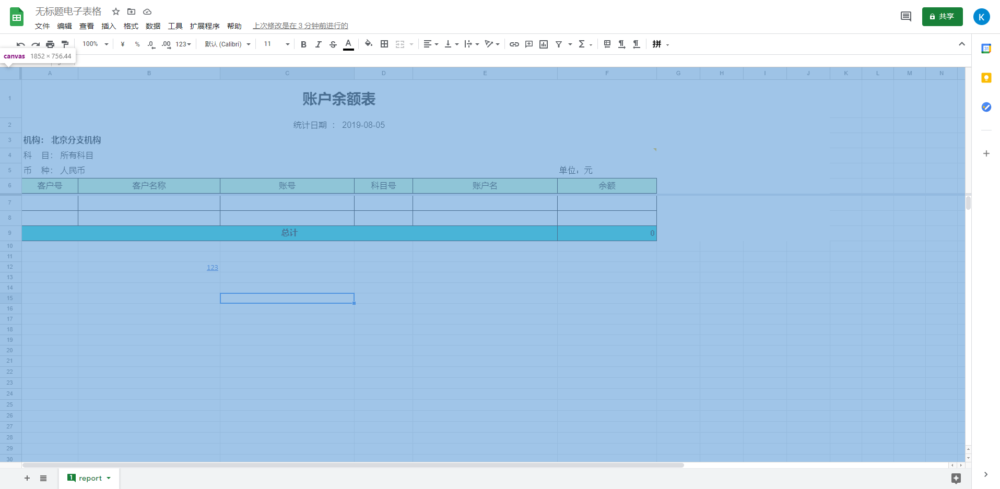
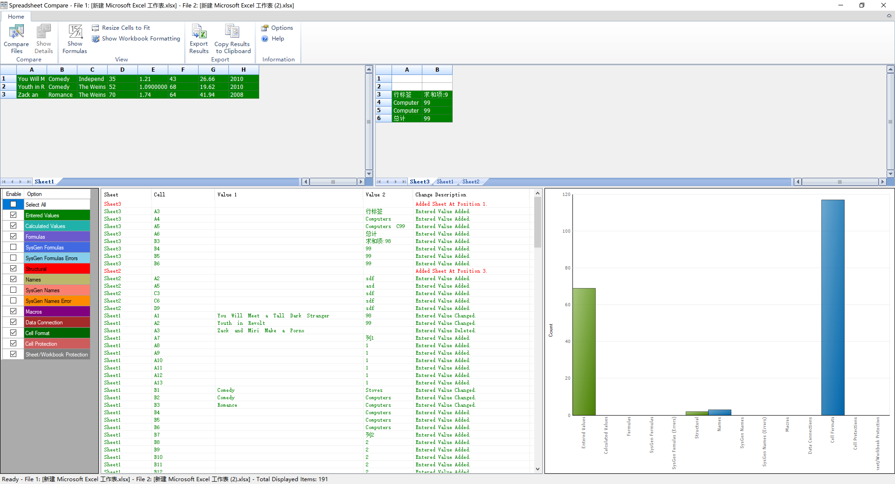

历史记录和版本管理功能，在表格文档功能模块中是一个常见的需求。我在SpreadJS技术顾问的工作中，也曾多次收到过客户一些这样的需求：怎么记录修改的单元格信息？怎样获得并记录用户的操作行为？怎样保护所有单元格不被修改，但要能够记录原始的单元格保护状态等问题。当我与客户进一步沟通时，发现以上问题几乎都是来自于版本管理的需求范畴。
报告结构：
- 演示视频(于2022-07-10提交)
- 导言
- 在线文档实现
- Office相关实现
- 常见需求场景
- 总结
- 附录
演示视频
本节为方案演示视频，基于 2022-07-10 提交 Demo 录制。
Origin: https://www.grapecity.com.cn/developer/spreadjs/industry/version
一、导言
研究背景
历史记录和版本管理功能，在表格文档功能模块中是一个常见的需求。我在SpreadJS技术顾问的工作中，也曾多次收到过客户一些这样的需求：怎么记录修改的单元格信息？怎样获得并记录用户的操作行为？怎样保护所有单元格不被修改，但要能够记录原始的单元格保护状态等问题。当我与客户进一步沟通时，发现以上问题几乎都是来自于版本管理的需求范畴。
作为一个专业表格控件团队，我认为我们有必要详细调研完整的版本管理需求，以及结合实际应用场景下的应用实现。
研究目的
了解当前市场上主流的表格文档工具版本管理功能的设计，学习主流表格文档产品的实现思路，从满足需求、接受程度高、交互友好、用户易用、实现难度等几个方面进行分析总结，以便提供给客户一个完整、专业的方案，同时指导我们自己产品的未来方向。
二、在线文档的实现
本次调研选取了多个主流在线文档产品，学习了这些产品的相关实现方式。调研对象包括：Google Docs、金山文档、腾讯文档、石墨文档、飞书、语雀。其中有些比较有影响力的文档产品，如印象笔记（无表格功能）、有道云笔记（当前为Beta版, 无版本管理功能）、Notion（无类Excel的表格文档功能）由于()内原因没有继续深入了解。
下面罗列了这些文档产品相关功能的截图和注解，本段的最后有总结。
Google Docs
在线文档领域，Google出道最早，在2006年前后就推出了GoogleDocs。虽然国内用户很少，但考虑到它从无到有的开创性，被选为本次调研首先选择的对象。
图中标记出绿色背景的单元格，是修改的diff部分。GoogleDocs只做了版本记录，没有记录每一步动作。其中版本信息中包含了文件的来源（导入的xlsx文件）以及原始文件查看功能。
用户可以对某个历史版本进行命名，“仅显示已命名版本”按钮就可以过滤掉自动保存的版本，仅保留用户命名的版本。命名方式如图：“显示更改”的复选框，勾选后会高亮当前选中版本中更改的内容。需要特别指出的是，Google Docs的历史版本查看界面和表格交互界面，用了两种不同的实现机制，如图：

也就是说，历史版本查看界面是不能修改的，这也是以下大部分在线文档产品的设计和实现思路。
石墨文档
2015年，石墨文档开启了国内在线协作文档的时代。石墨的上线也刺激了国内一众大厂，腾讯、金山等也都先后推出对应的协同文档产品，来抢占这一市场。石墨文档的表格工具采用了SpreadJS，但在细节上做了非常多独到的设计，市场口碑和知名度都比较高（从各平台检索在线文档都榜上有名）。
石墨文档的版本管理功能，分为历史和版本两个模块。
其中，操作历史会自动记录用户在表格中做的操作（并非每一步操作都会被记录，而是1分钟内的所有操作会被记录为1条历史记录），甚至包括保存版本操作也会被记录为1个历史。这个过程是自动进行的，不需要用户手动操作。
版本功能是由用户手动操作的，用户需要点击“保存当前版本”按钮时，会把当前的文档保存为一个版本，如果当前版本与上个版本没有任何改变，会自动失败并提示“不能重复创建版本”。
在版本管理 / 历史管理界面时，选中对应的版本/历史时，表单中的diff区域会被标记，此时左侧表单区域处于只读状态。如图：
腾讯文档
腾讯文档是目前我最常用的一个在线文档产品，常常用来与客户交流问题列表等信息，主要是因为它与我平时常用的沟通工具，如微信、QQ、企业微信、腾讯会议等工具有非常好的集成，无论我在哪个工具中打开的文档，都可以同步到我的云账号里。如图（左图是小程序，右图是腾讯会议）：
从使用体验上讲，功能完备，界面简约（我没有测试过协同和性能），对于基本的功能需求都可以满足。
与石墨类似，腾讯文档也有历史和版本两个管理界面。区别是，版本功能不能手动创建，而是在点击导出本地xlsx文件或生成副本的时候，才会创建一条版本信息：
腾讯文档的历史记录保存策略是：无论什么修改操作，每过1分钟，会在历史记录下生成1条子记录，记录方式类似石墨文档。如图：
飞书
字节跳动出品。它诞生于字节跳动内部员工的使用经验，提供了大量功能丰富、设计美观的表格模板，涵盖了互联网工作中常见的功能性表格模板，并且支持自定义模板的功能，这个让我眼前一亮。如图：

飞书没有版本的概念，只有历史记录管理功能。它的历史记录会按照操作类型和时间进行分组记录，如图：
我编辑了一批单元格，然后下拉填充了一批单元格，在飞书的历史记录中，会被记录成两条不同的操作历史。
语雀
语雀出自阿里巴巴，主打的是在线知识库平台，这也是阿里内部主要使用的文档工具。它具有独特的文档管理能力，不过与本次调研的主题相关性不大，还是重点关注它的表格文档版本管理能力。

语雀的版本管理功能与石墨文档逻辑类似，UI上略有不同。历史记录是最直接的保存(Ctrl+S) + Diff标记，不区分时间、行为等因素。
金山文档
得益于WPS在国内的市场占有率，金山文档实际上的用户基数是比较大的。在桌面端WPS注册并登录状态下，WPS会自动同步文档的内容和历史版本信息到金山文档中。实际试用下来，金山文档的功能、体验都不错，对于熟悉了WPS的用户，可以非常顺滑地切换到在线的金山文档。
金山文档支持历史记录、版本管理、实时协同等。
金山文档的历史记录功能在这几个文档产品中是最丰富的，包括了近期改动、今天改动、近3天/7天改动、历史版本、协作记录等几个选项。

以上两个内容，是金山文档特色的改动记录回看功能，它不仅标记了修改的内容，而且可以显示修改时序，并按步骤回放修改动作。此功能仅支持单元格数据编辑，不支持浮动元素、批注等。
另外，金山文档的历史记录列表功能，类似于石墨文档，会按时段保存子记录，不区分行为（粘贴、下拉、移动单元格、修改等都在一起），当弹出历史版本侧边栏时，左侧的表格区域可以继续编辑，但历史版本列表不会自动刷新。如图：总结：
通过对以上主流在线文档产品的试用，我对它们的版本管理能力做个简单总结。
历史记录：
功能上讲，历史记录就是为了记载文档修改的历史，记录的信息包含修改时间、修改人、修改内容（高亮显示）、预览、回滚等功能（金山的回放比较特殊）。
实现上看，一条历史记录生成的策略无非三种：按时间、按行为、保存。其中时间和行为常常一起实现，而多数文档产品有自动保存的功能，对历史记录的生成没有强关联。
每一条历史记录都可以预览，实际上除了金山文档，其它文档在进入“历史记录”界面时，整个表格都会进入“预览状态”，在预览状态下，表格中会高亮标记出修改的内容单元格，并且不能在预览状态下修改表格内容。
用户可以选择指定的历史记录，执行回滚操作。当执行回滚后，相当于做了一步修改操作，会生成新的历史记录（或版本）。
版本管理：
以上几个文档产品中，有些并没有单独的版本管理功能界面，只实现了历史记录的功能，例如金山文档和GoogleDocs，可以看作是把版本管理和历史记录实现在一起了。
比较有代表性的两个是石墨文档和腾讯文档，从实现上看，它们对“版本管理”的定义和实现策略有所不同。
石墨文档可以由用户主动创建新版本，但不是建立“分支”或者可以分别预览、编辑。石墨文档的版本管理，类似于手动生成一条历史记录，可以由用户对当前文档内容保存快照，以便后续的回滚。
腾讯文档的版本管理，类似开发中的fork或branch的功能，不能由用户手动创建，而是当用户生成副本、保存模板，或导出成本地Excel文档时才会自动生成。也支持历史记录的预览和回滚的功能。
三、Office 相关实现
对于表格工具，最绕不开的还是Office Excel相关的产品。这里主要调研了SharePoint的版本管理功能，以及Excel的Diff工具：Spreadsheet Compare.
SharePoint
SharePoint的介绍直接看Wikipedia原文吧，这里不多介绍:
它的在线Excel表格中，设计版本管理的界面有三个，如下：
打开文档后，点击左上表格名称，可以弹出右侧边栏的历史记录列表，顶部的Save a Copy 和 Restore 按钮分别可以建立当前历史状态的副本，以及执行回滚到选中记录状态。可见从样式和功能上与上一节的在线文档类似，这里不多介绍。
Spreadsheet Compare
在版本管理中，一项必备的功能就是比对不同版本间的差别。在以上提到的所有在线文档产品中，这项功能实际上都并不算完整。在Excel中有各种元素，值、样式、公式、格式、条件格式、图表、图片、形状等等，以上在线文档产品在对比Diff时，只是高亮了发生改变的单元格（金山文档除外），这样会产生两个问题，一是用户要完整找到所有变更的元素很麻烦，需要把有数据的区域都找一遍；二是对于图片、图表、形状等浮动元素的改变，无法给与有效提示。
Office Excel桌面版（Windows 10下测试）实际上有个隐藏的Diff工具，非常强大。据了解它是一个扩展包，仅在Office Excel 2013/2016/2019 的Extension及Office 365中才提供。它具备强大的Diff比对功能，如图：

可视区域分为上、中、下三部分，各区域功能如下：
<1> 上部菜单栏：
选择对比文档、显示Diff详情、显示公式、自适应单元格、切换diff/原始样式、导出对比结果、把对比结果列表复制到剪贴板、选项和帮助。
<2> 中部文档区域：
左右分别是参与对比的两个文档，可以切换sheet页，只对比sheet名称相同的表单内容。
<3> 下部Diff信息区域：
对比Diff的内容包括：输入值、计算值、公式、系统生成公式、系统生成公式错误、结构、命名信息、系统生成命名信息、系统生成命名信息错误、宏、数据连接、单元格格式、单元格保护状态、Sheet/Workbook保护状态。
从左到右依次是对比信息列表（可勾选）、Diff列表、Diff统计图表。
XLTools
Spreadsheet Compare仅仅是一个Excel文档的Diff工具，有些第三方的插件，通过把它集成到Excel中，实现了完整的版本管理功能。比如XLTools，它集成了版本提交、修改历史保存、Diff对比等功能，如图：

从截图可见，它采用了类似SVN这种版本管理工具的思路，每次commit都保存了完整的版本副本，再通过Spreadsheet Compare工具执行版本的Diff比对。
四、常见需求场景
在二、三部分我罗列了一些当前主流的在线文档、和Office的版本管理功能实现。在真实的项目当中，这个功能的应用是非常广泛的。这里我找到一些应用案例：
金蝶云
金蝶云是移动互联网时代的新型ERP，旨在帮助企业打造面向新时代的生态互联与协同平台，围绕生态中的每个角色，提供随手可得的云服务，最终实现敏捷协同，智慧运营的企业运营新境界。
整个产品采用SOA架构，完全基于BOS平台组建而成，业务架构上贯穿流程驱动与角色驱动思想，结合中国管理模式与中国管理实践积累，精细化支持企业财务管理、供应链管理、生产管理、供应链协同管理、人力资源管理等核心应用。技术架构上该产品采用平台化构建，支持跨数据库应用，支持本地部署、私有云部署与公有云部署三种部署方式，同时还在公有云上开放中国第一款基于ERP的协同开发云平台。
研发物料管理模块：
在金蝶云的【研发物料管理】模块，对于物料属性的变更，平台提供了【历史记录】的功能，如下图所示，这是一个典型的历史记录列表，其中生命周期阶段、版次两个字段记录了与版本相关的行为信息，其它字段是模块相关的业务信息。
还是【研发物料管理】模块，对物料相关对象变化的历史记录管理，同样引入了【历史记录】的功能，直接看图：
设计BOM管理模块：
BOM管理（Bill of Material 物料管理）涉及对BOM的建立、流转、变更、结算等环节进行维护和控制的过程。金蝶云的BOM管理模块，涉及到大量的表格报表设计、比对、版本、生命周期控制等功能点。如图：
文档管理
在金蝶云的平台中，文档管理是PLM系统的主要功能模块之一，管理产品全生命周期内所产生的各种文档，包括研发过程控制文件、产品图纸、体系文件、工艺手册、检验规范、技术资料等。
通过对项目过程中的资料收集而建立企业的电子资料库，规范化的标准资料库，方便企业查询使用，加快研发速度，提升研发效率，创造更大的经济价值。
其中，【历史记录】的功能可以提供给用户追溯修改历史的能力。历史记录界面如下：
某合同管理系统
在企业合同管理的业务模型中，合同拟定、合同变更等环节都涉及到合同文档的修改。通常针对合同修改的内容、段落、字体、格式、标记等元素，都需要记录变更详情，以便后期追溯。一个完整的合同管理流程如下图所示：
通常合同文档常见的格式有Word 和 Excel两类，而以Word文档为主体的合同文档，通常也会附上一个或多个描述数据/交付物/时间等信息的Excel文档，因此这也是版本管理的常见应用场景之一。下图是某公司的购销合同模板示例：
五、总结
以上是本次【表格版本管理】调研报告的主要内容。
本篇报告首先简述了调研背景、调研目的；其次了解了市场上主流文档产品、以及Office Excel的版本管理的相关实现，这些产品基本上占据了在线/本地表格文档产品的大部分市场份额，因此我把它们的实现方式作为一种较为成熟的参考依据。
第四部分我尝试展示了一些实际的管理系统中对于版本管理功能的应用。这部分调研难度还是比较大的，我引用了大量的第三方文档和资料，但没有找到相关的实际系统可以直接操作体验。如果大家有更好的案例，希望能提出讨论，分享补充丰富。
六、附录
附：各产品横向对比表格